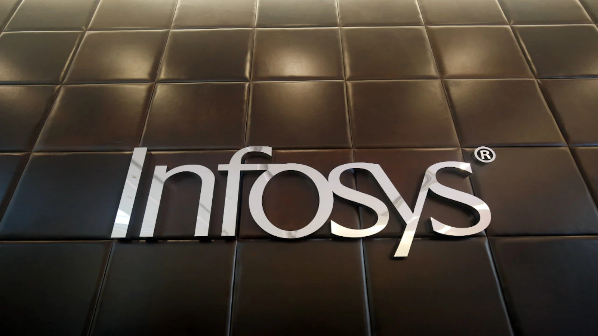
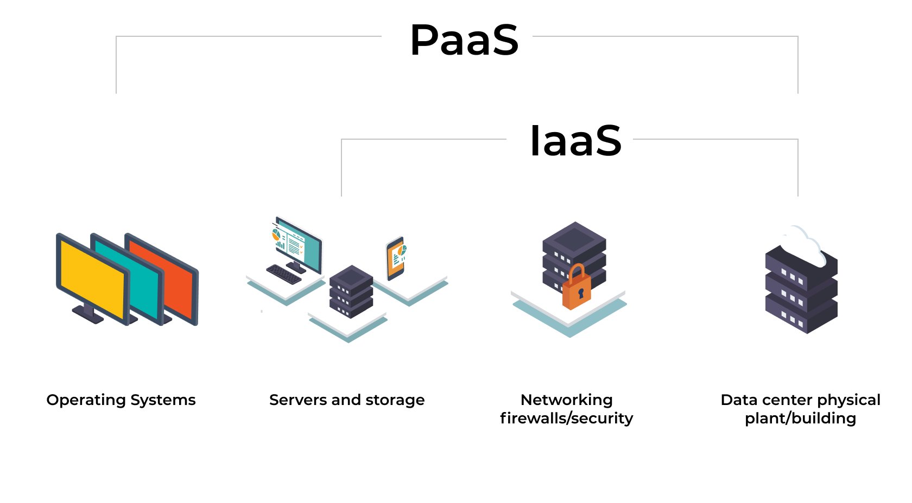
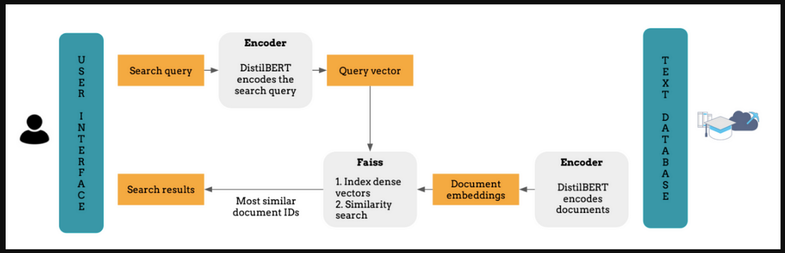

Hi, my name is Sarfaraaz Hussain!
ABOUT ME
ML/Data Science
Programming
Data Engineering
Backend
Who am I?
I'm Sarfaraz Hussain Gounda, a versatile computer engineering student experienced in Software Development and Machine learning. With expertise in Python, Java, and C++, I excel in creating practical solutions. From internships at Gilead Sciences and William Blair, I've honed skills in data analysis, cloud computing, and microservices. I'm dedicated to crafting innovative, efficient solutions that contribute to the technology landscape.
PORTFOLIO
-
William BlairSoftware Engineer Intern
- Designed data mapping plan with business data owners and functional teams to perform data migration from third party application to Azure Databricks.
- Implemented a robust data ingestion framework that allow for the expedited migration of numerous data sources into HDFS using Apache Sqoop.
- Worked with end users to evaluate business requirements and developed Spark jobs to transform, load data into target database.
-
Gilead SciencesSoftware Engineer Intern (Data Science)
- Collaborated with Data Science team to develop a common interface for machine learning scientists and business teams to access datasets and meta data in the Unified Datasets Storage using Java Springboot and ensured scalable and maintainable code.
- Analysed the QA Dept data through Data Wrangling, Feature Engineering and Exploratory Data Analysis.
- Developed an automated Data pipeline and Tableau dashboard that display the analytics of investigators, resulting in a 25% increase in productivity.
-
Arizona State UniversityGraduate Student Assistant
- Tutoring the students with various Statistics, Machine Learning concepts and guiding them with software tools like SPSS, Intellectus, MS Excel, Tableau and Python, R programming languages and frameworks like PyTorch, Tensorflow, keras.
- Conducted one-on-one sessions for students for their reports and projects to implement strategic planning.
-
InfosysSoftware Development Engineer
-
Designed and Developed MicroServices for essential client services, including system integration with Fidelity Information Services and Unit Test coverage using JUnit and Mockito.
- Employed the synergy of AWS S3, Apache Kafka, and Spring Boot to orchestrate a real-time monitoring mechanism, effectively facilitating the migration of a substantial volume of 200,000 user data records.
- Implemented Spring Security for API using JWT and Spring Security Auth for multifactor authentication and created Docker images to ensure efficient deployment across various environments.
- Ensured on-time delivery of the assigned tracks
 -
AWS Face Recognition as a ServiceCloud Computing | ASU
- IaaS : Created a cloud-based application that provides face recognition services using AWS resources such as S3, SQS, and EC2 to perform deep learning using CNN models on user-supplied images. The application is elastic and can scale in and out based on user demand and concurrent requests
- PaaS: Developed a real-time Face Recognition application using a Raspberry Pi device as the edge computing platform. Tech Used: Python, Docker, S3, AWS Lambda, DynamoDB, API Gateway, CloudWatch
 -
Expense Manager AppDatabase Management System Implementation | ASU
- Developed a production-ready, industry-standard Full Stack Web Application using Spring Boot and Thymeleaf
- Connected the Spring Boot application with popular ORM Frameworks like JPA, Hibernate, and MySQL/PostgreSQL databases, ensuring data integrity and consistency.
- Implemented Spring Security to encrypt plain passwords and secure the Spring Boot Web application, ensuring maximum protection of sensitive user data.
- Improved the user interface by adding Bootstrap 5 to Thymeleaf templates, making the application mobile-responsive and user-friendly and added CSS, Javascript, and jQuery to Thymeleaf templates to enhance the user experience and improve the overall functionality of the application.
- Dockerized and Deployed the Spring Boot application to Heroku and AWS cloud, ensuring high scalability, performance, and availability.

-
Continous Glucose Monitoring ApplicationMobile Computing | ASU
- Developed a robust meal detection method by seamlessly parsing and synchronizing Continuous Glucose Monitoring (CGM) data with meal ground truth, providing accurate insights into meal events.
- Designed and implemented four efficient algorithms for real-time meal event detection, leveraging online data processing to promptly identify meal occurrences from CGM data.
- Employed advanced modeling techniques, including Auto Regression, SARIMA, and LSTM, to create predictive models for CGM data, enhancing the understanding of glucose trends and aiding in meal detection accuracy.
- Innovatively utilized Kalman Filter and RNN-based approaches, powered by TensorFlow, to enhance meal detection precision, utilizing state-of-the-art techniques for more reliable and comprehensive results.
-
Gesture Recognition - ASLMobile Computing Project at ASU
- Developed a mobile application using Android framework to capture videos of various gestures in the AmericanSign Language
- Keypoints were extracted using Posenet and the signs were identified using a Deep NeuralNetwork using Python, TensorFlow hosted in the server and using ML algorithms(K-NN, Decision Tree etc) to classify the category of the gesture uploaded.
- Tech Stack used - Node.js, Java , Python ,Android Studio.

-
News Search EngineStatistical Machine Learning| ASU
- Developed a news search engine utilizing scraping to gather articles, and inverse indexing for efficient database retrieval.
- Implemented contextual similarity ranking using advanced models like sentence transformers (sBERT) and word2vec for accurate result ranking.
- The system offers semantic news article retrieval by analyzing context, enhancing search relevance and user experience.
 -
Sentimental AnalysisStatistical Machine Learning | ASU
- Conducted text classification for movie reviews using a NLP Pipeline, involving data cleaning, and employed the K-Nearest Neighbors (KNN) algorithm for classification.
- Utilized Pandas, Numpy, and Matplotlib for data manipulation and visualization, while leveraging KNN for sentiment-based categorization.
- Achieved sentiment analysis through a streamlined process, applying KNN to distinguish between positive and negative movie reviews.